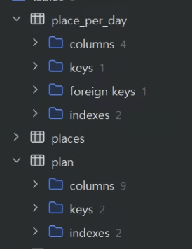

성장 과정
컴퓨터와 소프트웨어에 대한 관심은 경영학과에 진학하기 전부터 꾸준히 가지고 있었습니다.
대학교 입학 후, 코딩 동아리 PRIMITIVE에서 다양한 실습과 프로젝트를 직접 경험하면서,
제가 단순히 관심을 넘어서 이 분야에 진심으로 흥미를 느끼고 있다는 것을 깨닫게 되었습니다.
이후 본격적으로 프로그래밍 언어를 배우면서 데이터 흐름 처리 방식, 객체지향 프로그래밍 개념,
그리고 백엔드 시스템의 전체적인 구조와 작동 원리에 깊은 흥미를 갖게 되었고,
이 경험은 저를 소프트웨어학과로 전과하게 만드는 계기가 되었습니다.
특히 2022년 카카오의 개인정보 유출 사건은 저에게 매우 큰 충격으로 다가왔습니다.
단순한 서비스 중단을 넘어, 수많은 사용자들의 개인정보가 유출되며,
디지털 인프라의 취약점이 실생활에 얼마나 심각한 영향을 미칠 수 있는지를 실감하게 되었습니다.
이 사건은 저로 하여금 단순히 기능을 구현하는 수준을 넘어서,
그 기능이 운영되는 기반 시스템과 인프라에 대한 책임감을 갖게 만들었습니다.
그 후로 저는 네트워크의 기본 구조, 보안 설계 방식, 장애 대응 시나리오 등에 관심을 갖고 꾸준히 공부하게 되었으며,
기술적인 완성도와 함께 안정적인 서비스를 운영할 수 있는 능력을 갖춘 개발자가 되고 싶다는 목표를 세우게 되었습니다.
특히 사용자에게 신뢰를 줄 수 있는 서비스를 제공하기 위해서는,
눈에 보이지 않는 인프라 영역에 대한 이해와 준비가 필수적이라는 점을 깨달았습니다.
앞으로 저는 단순한 기능 구현을 넘어서 백엔드 아키텍처의 설계, 보안성 확보, 인프라 자동화 등
보다
전문적인 영역까지 깊이 다루는 클라우드 백엔드 개발자로 성장하고자 합니다.
변화에 유연하고 장애에 강한 시스템을 설계하고 운영할 수 있는 능력,
그리고 문제 발생 시 빠르게 대응할 수 있는
실전 감각을 갖춘 개발자가 되어,
사용자와 기업 모두가 신뢰할 수 있는 기술을 제공하는 것이 제 목표입니다.

SKT 해킹 사건
SK텔레콤 일부 서버가 해킹되어 고객 개인정보가 유출된 사건사진을 눌러 링크를 이동해보세요 👇

이런 사건이 일어난 이유
각 사진에 마우스 커서를 올려서 확인해보세요!
 네트워크의 출입문 역할을 하는 구간에서 차단이 |
 망 분리, VLAN 설계, 내부 방화벽 정책이 허술했습니다. |
 비정상적인 트래픽을 탐지했지만 대응이 늦거나 무시된 사례입니다. |
| 🔒 1. 경계 보안 실패 | 🧱 2. 서버 간 네트워크 분리 미흡 | 🚨 3. 이상 징후 탐지 실패 |
나의 의견
이번 SKT 통신 장애를 겪으면서, 저는 네트워크라는 기술이 단순히 데이터를 전달하는 수단을 넘어,
우리의 일상과 안전을 책임지는 중요한 기반 인프라라는 사실을 뼈저리게 느꼈습니다.
그동안 통신이라는 개념을 막연히 기술의 일부로만 생각해왔지만,
실제로 수많은 사람들이 하루하루 의지하는 시스템이라는 점을 깨닫게 되었고,
단 한 번의 취약점이 얼마나 큰 사회적 영향을
초래할 수 있는지를 직접 체감할 수 있었습니다.
이 사건을 계기로 저는 단순히 네트워크 기술을 배우는 데서 그치지 않고,
앞으로 이 분야를 진지하게 공부하고 책임 있게 다뤄야겠다는 다짐을 하게 되었습니다.
특히, 사용자가 신뢰할 수 있는 시스템이 되기 위해서는 단단한 설계와 꼼꼼한 보안,
그리고 예기치 못한 상황에서도
빠르게 복구할 수 있는 기술적 역량이 필수적이라는 점을 절감했습니다.
따라서 저는 앞으로 네트워크 구조와 보안 설계,
장애 대응 능력까지 종합적으로 갖춘 엔지니어로 성장하고 싶습니다.
그저 기술을 다루는 개발자가 아닌,
사람들의 삶과 연결된 시스템을 책임지고 안정적으로 운영할 수 있는 실력을 갖춘,
진정한 의미의 네트워크 엔지니어가 되고 싶습니다.
프로젝트 오류 해결
|  | planJ Plan과 PlacePerDay 관계를 양방향 ManyToMany 또는 잘못된 단방향 일대다로 설정함. |
👉결과👈
처음에는 Plan과 PlacePerDay의 관계를 양방향 @ManyToMany 또는 잘못된 단방향 @OneToMany로 설정했습니다.
하지만 @ManyToMany로 설정할 경우 JPA가 자동으로 중간 조인 테이블을 생성하게 되어,
의도와 다르게 불필요한 테이블이 생기고, 또한 @JoinColumn 없이 단순히 @OneToMany만 선언한 경우에는
외래키가 제대로 설정되지 않아 Plan과 PlacePerDay 간의 관계가 DB에 정확히 반영되지 않거나,
저장 시 연관 관계가 누락되는 문제가 발생했습니다.
👉해결방식👈
@OneToMany(cascade = CascadeType.ALL, orphanRemoval = true, fetch = FetchType.EAGER)
@JoinColumn(name = "plan_id") // PlacePerDay 테이블에 plan_id 외래키 생성
private List<PlacePerDay> placesPerDay = new ArrayList<>();
이러한 문제를 해결하기 위해 Plan과 PlacePerDay 간의 관계를 @OneToMany와 @JoinColumn으로 재설계했습니다.
이를 통해 중간 조인 테이블 없이 PlacePerDay 테이블에 외래키(plan_id)가 직접 생성되도록 하였고,
cascade = CascadeType.ALL, orphanRemoval = true를 설정함으로써 Plan의 생성, 수정, 삭제 시 관련 장소 정보도 자동으로 처리되도록 구성했습니다.
또한 단방향 매핑으로 유지하여 설계의 복잡도를 줄이고 순환 참조 문제도 방지할 수 있었습니다.
👉요약👈
본 프로젝트는 Java Swing 기반 클라이언트 애플리케이션으로, MySQL을 활용해 여행 계획 데이터를 저장·조회하도록 구성했습니다.
네이버 클라우드의 Cloud DB for MySQL과 유사한 환경을 로컬에 구현하고, 향후 배포 확장 가능성을 고려해 설계했습니다.
개발 중 JPA 연관관계 매핑이 가장 큰 어려움이었고, Plan과 PlacePerDay 간 관계 설정 오류로 인해 중간 테이블 생성 문제가 발생했습니다.
이를 @OneToMany, @JoinColumn, cascade, orphanRemoval을 활용해 단방향 관계로 재설계하며 안정적인 데이터 처리를 구현했습니다.
추후에는 실제로 네이버 클라우드 환경에 배포하여 클라우드 DB와 연동해보며 실무 환경을 경험해보고 싶습니다.
관심 기술
👉스프링/스프링 부트👈
 |
스프링(Spring)은 자바 기반의 대규모 웹 애플리케이션을 쉽고 체계적으로 |
👉Cloud DB for MySQL👈